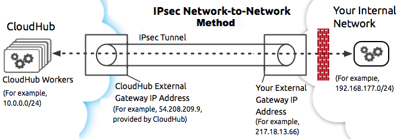
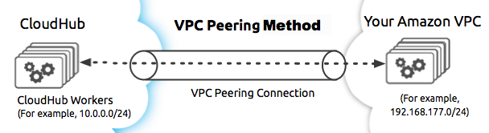

Virtual Private Cloud
The Virtual Private Cloud (VPC) offering allows you to virtually create a private and isolated network in the cloud to host your CloudHub workers.
You can choose to use this isolated network as it best suites your needs:
-
Host your applications in a VPC and take advantage of its dedicated load balancer features
-
Configure your own firewall rules to apply to your workers.
-
Connect your VPC to your corporate intranet – whether on-premises or in other clouds – via a VPN connection as if they were all part of a single, private network.
-
Set your private DNS server so the workers hosted in your VPC communicate with your internal network using your private hostnames.
How VPC Works
As opposed to the default configuration, where all CloudHub workers reside in a multi-tenant public cloud, balanced by a publicly accessible load balancer, the Virtual Private Cloud grants you a logically private and isolated network dedicated to host your CloudHub worker instances.
Additionally, you can choose to expose or block your custom ports using your own firewall rules, and even block requests to your apps coming from CloudHub’s publicly accessible load balancer so you balance your requests using your own dedicated load balancer.
Each VPC can host one or more dedicated load balancers with a DNS A record that you can add to your own DNS CNAME record to point to. This way you can configure your VPC’s load balancer to handle requests to your own domain.
Alternatively, you can connect this network to any other network via a secure VPN connection. This allows CloudHub workers to access resources behind your corporate firewall. You can leverage an IPSec gateway or Amazon Web Services (AWS) Direct Connect for VPN connectivity.
Learn more about each connection alternative in the VPC Connectivity Methods section below, and how you can configure your own DNS server to redirect to your internal network using your private hostnames.
Configuring a VPC for Your Account
In order to properly configure a VPC for your account, you need to keep a few considerations in mind.
Defining a proper size for your VPC at the beginning is crucial since once a VPC is created you need to remove all your workers and redeploy them once the change is complete. In order to avoid unnecessary downtime, it is recommended to design your VPC to scale accordingly. More information can be found in the VPC size section below.
Creating a VPC is the first step. In order for the VPC to be able to host your Workers, it needs to be bound to a business group and a specific CloudHub region, and once it’s created, you need to redeploy your applications.
More information about this can be found in the deployment section below.
You also need to make sure that the firewall rules are configured according to your needs. Check the firewall rules section below for more information.
Once this is defined, you can proceed to create your VPC using:
-
The VPC UI available in your Runtime Manager section.
-
The Anypoint Platform CLI (Look for the specific
vpc createcommand).
If you need to connect other private networks to your CloudHub VPC, follow the steps described in the connectivity methods section.
Size Your VPC
When you create a VPC, the range of IP addresses for this network needs to be specified in the form of a Classless Inter-Domain Routing (CIDR) block, using CIDR notation.
In order to calculate the proper sizing for your VPC, you first need to understand that the number of dedicated IP addresses is not the same as the number of workers you have deployed.
For each worker deployed to CloudHub, the following IP assignation takes place:
-
For better fault tolerance the VPC subnet may be divided into up to 4 Availability Zones.
-
A few IP addresses are reserved for infrastructure.
-
At least two IP addresses per worker to perform at zero-downtime.
Due to this structure, the smallest network subnet block you can assign for your VPC is /24 and the largest /16.
A /24 (CIDR notation) subnet has 256 IP addresses.
Reserving one IP address for the network and one for broadcast you have 254 hosts for your worker, which get divided into 4 availability zones of 62 hosts each. Consider that each worker potentially needs two IP addresses for zero-downtime, that’s around 30 IP addresses to assign to your workers.
|
Updating the size of a VPC once it’s created and hosting workers, demands all applications to be undeployed before resizing. |
The safe rule of thumb for deciding the size of your VPC subnet is 10 times the maximum number of expected apps to deploy in the VPC.
Deploying To Your VPC
All VPCs need to be associated with a CloudHub region and to an environment inside one of your CloudHub organization or business group.
When you create a VPC associating it to a region and an environment, every application deployed to that region and that environment is automatically deployed to your VPC.
You can choose to set your VPC as default for a specific region, associating the VPC to all environments in that region that are not explicitly associated with other VPC.
You can have more than one VPC per region.
This means that, for example, having three environments in US-EAST:
-
Production
-
QA
-
Staging
And setting one VPC (vpc-1) for Production in US-EAST and another VPC (vpc-2) as default for US-EAST causes for all applications deployed to Staging and QA to be automatically deployed to vpc-2.
Applications that were deployed before creating your VPC are not automatically migrated. It is necessary to redeploy the applications so they can be hosted in the VPC.
VPC Management Permissions
As an organization administrator, you can create a VPC and share it with any business group within your main organization.
However, once the VPC is inherited by a business group, only the administrator of said business group can operate the VPC (i.e. set worker’s firewall rules, assign it as default to an environment within that business group, etc).
If no business group association is specified, or if your organization does not have any business group, the VPC ownership remains associated with the main organization.
The organization under which the VPC is created is the VPC Owner and this organization’s administrator is the only one who can share the VPC.
|
VPCs can only be shared vertically from the main organization to one of its business groups, or from a business group to one of its child business groups. |
|
A CloudHub organization administrator or a Business Group Owner can create or update an existing VPC (owned or inherited) to make it the default for either the region, the environments or both. |
Firewall Rules
In CloudHub’s default configuration, all applications are hosted in a multi-tenant cloud balanced by a publicly accessible load balancer.
When creating your own isolated network, you can use your own firewall rules to allow specific IP ranges and ports from reaching your workers.
|
A Firewall Rule checks inbound connections only to your workers. Not to the VPC or your dedicated load balancer. |
All traffic to your VPC is blocked, unless it’s allowed in a firewall rule. When creating a VPC, 4 firewall rules are created by default:
-
2 rules to allow inbound connections from your local VPC from ports
8091and8092:{ "CIDR Block": "10.111.0.0/24", // (Local VPC) "Protocol": "TCP", "From port": 8092, }, { "CIDR Block": "10.111.0.0/24", // (Local VPC) "Protocol": "TCP", "From port": 8091, },These firewall rules allow traffic from the VPC to reach your workers through ports 8091 and 8092 (these are the only ports used by your CloudHub dedicated load balancer to proxy all external communications to your workers through).
The 10.111.0.0/24 is an example of a firewall rule whose private address space was set to 10.111.0.0 and sized to have 256 IP addresses.These default firewall rules will show the CIDR block that you set for your VPC. |
-
2 rules to allow inbound connections from anywhere through ports
8081and8082:{ "CIDR Block": "0.0.0.0/0", // (Anywhere) "Protocol": "TCP", "From port": 8082, }, { "CIDR Block": "0.0.0.0/0", // (Anywhere) "Protocol": "TCP", "From port": 8081, }These rules allow traffic from any host to reach your workers through ports 8081 and 8082 (these ports are used by CloudHub’s default load balancer to proxy external requests to your workers).
|
If you don’t want your internal workers to be reached by the default load balancer, follow our networking guide to avoid public discoverability for applications on CloudHub. |
You can set these rules using the Anypoint Platform CLI’s firewall rule creation command or use the UI.
Set up Internal DNS
If you choose to connect other networks to your VPC, you can use your custom private domain names by specifying your custom hostnames and the DNS server IP address through which resolve them.
Any request that matches your specified private hostnames, will first be resolved using your provided DNS servers.
You can pass as many domains as you need, and up to 3 IP addresses.
|
This feature is supported by workers running Mule versions 3.5.x, 3.6.x, 3.7.4, 3.8.0, 3.8.1 and newer. |
You can configure this feature using the Anypoint Platform CLI’s command, or through the VPC UI.
VPC Connectivity Methods
If you need to connect your VPC to your internal network, or to another Cloud network, select the appropriate connectivity method for your use case. Then, contact your MuleSoft account representative to discuss your specific requirements. Once you have selected an option, download the VPC discovery form (requires at least MS Excel 2007 with macros enabled), then enter data to communicate the necessary details required for your connectivity method. Once they receive your form and answer any remaining questions, the CloudHub support team securely exchanges keys and supplies instructions on how to configure your router(s).
You can connect a Virtual Private Cloud to a datacenter using any of these methods:
-
Public Internet: Default connectivity to CloudHub VPC.
-
IPsec tunnel with network-to-network configuration: Connect a network to a CloudHub VPC with an IPsec VPN connection as shown in the diagram below:
IPsec is, in general, the recommended solution for VPC to on-premise connectivity. It provides a standardized, secure way to connect, which integrates well with existing IT infrastructure such as routers/appliances. -
VPC Peering: Pair an Amazon VPC directly to a CloudHub VPC.
If the services you are connecting to are hosted on AWS, then you can choose to peer your CloudHub VPC and your AWS VPC.
The diagram below illustrates connecting a CloudHub VPC and Amazon VPC together directly through VPC peering:
 -
CloudHub Direct Connect: If your network connects to your Amazon VPC using Amazon Direct Connect, you can create a hosted virtual interface to your CloudHub VPC.
The SLA for configuring VPC is 5 business days after the VPC discovery form has been completed, returned and approved by support, though it may be completed sooner.
Frequently Asked Questions about CloudHub VPC
Can I reuse my existing Amazon VPC?
No, but we can set up your CloudHub VPC to communicate with your existing Amazon VPC.
How does VPC work with Amazon regions?
Our VPC solution supports different Amazon regions. During setup, you need to specify which Amazon region you want. If you need support for multiple regions, please submit one copy of the discovery form for each region in which you need support.
Can I have multiple VPCs?
Yes, customers can purchase as many VPCs as required, with a minimum purchase of two. For more information on VPC pricing, contact your MuleSoft Account Executive.
Can I have multiple VPCs in a single Amazon region?
Yes, this is possible, but not included in our standard setup. Contact your account representative to discuss your requirements.
How do I communicate with my workers through my VPC without going over the public Internet?
You can communicate with your Mule worker by using mule-worker-internal-myapp.cloudhub.io as the address in your configuration. This is a DNS A record which includes the IP addresses of all your workers.